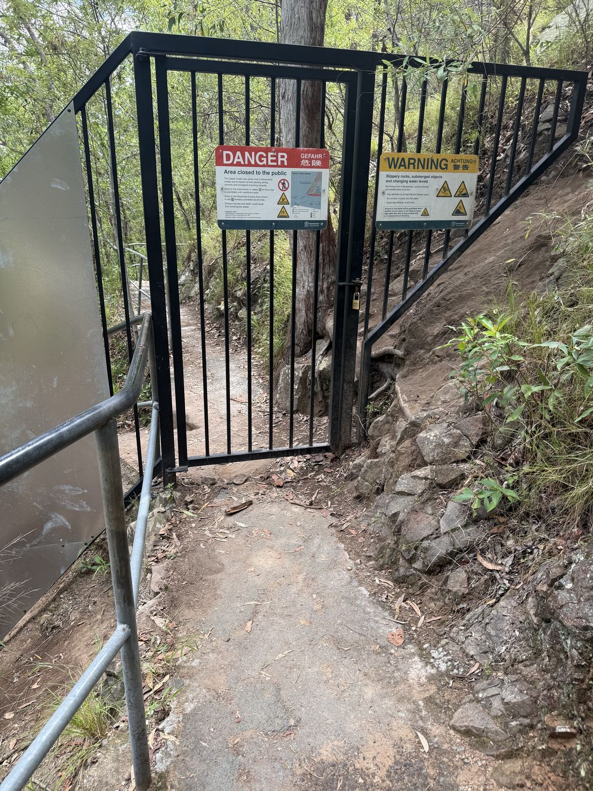

制作プロセス
脚本・ロケハン開始
「Save the Cat」などの脚本術をベースに、Geminiをアイデアの壁打ち相手として活用しながらプロットを構築。ジャンルは「金の羊毛」型のアドベンチャーファンタジーに設定し、並行してオーストラリアの雄大な自然を最大限に活かせるロケーションの選定を進めました。
「撮れる画」を確実にするための徹底的なロケハン
ロケーション・ハンティングでは、単に理想の風景を探すだけでなく、本番を想定したシミュレーションを重視しました。平日や休日で人出がどう変わるかを把握するため、可能な限り複数回現地へ足を運んでいます。早朝撮影など、一般の人が映り込まないよう最大限の工夫を凝らしましたが、完全な排除は難しいため、構図の工夫でカバーする現実的な判断も下しました。
キャスティング・準備
現地で出会った仲間たちに制作資料を提示し、直接説得してチームを編成。衣装手配と並行して、撮影未経験のメンバーへの技術共有(カメラ、マイク、NDフィルターの操作など)も行いました。単なる作業指示ではなく「各ショットで何を狙うのか」という画の意図まで共有しました。自らの本気度が、彼らを動かすことが出来たと感じています。
撮影
メンバーのスケジュール調整や見積もりの甘さから、当初3回を想定していた撮影は結果的に全10回に膨れ上がりました。緻密な香盤表の運用が初回のみで途絶え、その後は紙のショットリスト(Milanote)へメモでの運用にシフトしたことは進行管理上の反省点です。しかし、本プロジェクトでは撮影期間中にカメラマンが4人入れ替わるという状況下でありながら、現場の撮影スピードは回を追うごとに向上しました。これはショットリストでのレンズ倍率・カメラワークの緻密な数値指定や、事前イメージの共有など、監督としてのディレクション指示を徹底的に言語化・システム化したためです。特定の相手との慣れに頼るのではなく、「誰がカメラを持っても迷わず即座に意図通りの画を撮れる現場回し」を確立したからこそ、全10回の撮影を最後までクオリティを落とさず完遂することができました。
撮影① 天候トラブルへの即応

雨季の豪雨による増水で初期エリアが立ち入り不能に。即座に上流ポイントへ切り替えて撮影を完遂。
撮影①(2/28・土)(ロケ地: Cedar Creek Falls / クルー: 4名)。オーストラリア特有の雨季による急な増水で目的地の滝へ入れなくなるトラブルが発生。現場の迅速な判断で即座にスケジュールを繰り上げ、上流の安全なポイントへ撮影地を変更することで、撮影をストップさせることなく完遂しました。
撮影① 機材管理・オペレーションの再構築
撮影①(2/28・土)の機材紛失を反省し、現場オペレーションを即座に再構築。機材・食事・衣類などの「用途別バスケット管理」を導入しました。また、現場まで徒歩15分のアプローチがあるため、不要な荷物は車内に残して移動負荷を軽減しました。さらに車両への搬出入時には「写真照合チェック」を徹底し、以降の機材紛失をゼロに抑えました。
撮影② 痛恨のミスと熱量が引き寄せた奇跡
撮影②(3/14・土)(ロケ地: Gardners Falls / クルー: 2名)。たくみさんに初めてカメラマンを任せるにあたり、食事や移動の時間を活かしてショットリストの意図を事前共有。現場では役割を交代しながら理想のアングルや構図を細かく擦り合わせました。
そして川へのダイブシーン。まさかの「RECボタン押し遅れ」で撮り逃す痛恨のアクシデントが発生。「せっかくの素材が撮れていない…もう一回飛び直すしかないか」と憔悴する一方で、現場は前日までの豪雨で増水した激流へ飛び込む過酷な撮影に大盛り上がり。面白がって見ていた地元の子たちが、大歓声をあげ、いつの間にか僕はヒーローと化していました。
ダメ元で彼女たちに声をかけてみると、なんとスマホで完璧なアングルからバッチリ撮影してくれており、その場で映像を提供してもらうことで奇跡的に最高の素材を回収・補完できました。ピンチを今回の撮影での熱量が劇的なドラマに変えた、忘れられない撮影となりました。
自然環境を相手にする難しさと覚悟
過酷な自然環境での撮影では、ロケハンと即興の判断が試されました。再ロケハン(4/11・土)ではTwin Fallsの冷水対策・移動時間短縮のため海(Mooloolaba Beach)での代替ロケハンを実施しました。撮影③(4/19・日)(ロケ地: Twin Falls / クルー: 2名)では難色を示すキャストを説得して必要最小限のカットに抑え、撮影④(5/3・日)(ロケ地: Mooloolaba Beach)の海撮影では水温の上がるタイミングを狙って長時間撮影を完遂しました。現場では強い日差しで防水ケースに入れたiPhoneの画面が見えず、手持ちの服を被って反射を抑えながら画面を確認・撮影してもらうという泥臭い試行錯誤も行いましたが、最終的には映像表現を最優先し、iPhoneの水没リスクを承知の上で、ケースから出して「直撮り」の決断を下しました。
現場トラブルを演出に変える柔軟な構成力
助演が長セリフを現場で忘れてしまう問題に対し、即座に手持ちから三脚撮影へ切り替え、カメラ横に即席のカンペを配置。しかし、目線の違和感や文字サイズの限界を瞬時に見抜き、現場では途中のセリフを削って必要最低限に絞りました。削ったセリフは回想シーンに重ねるモノローグだったため後撮りへ切り替えました。編集では現場音と後撮り音の音質差が課題となりましたが、BGMの開始タイミングに合わせて切り替えたり、声を映像に重ねる工夫を実施しました。さらに「...俺も、やらなきゃって。奮い立たされるんだ」の「奮い立たされるんだ」という感情のピークでは、後撮り音声に現場で収録した生のセリフを重ねてミックスし、その最高のタイミングで画面を回想から現代へ戻すことで、トラブルを効果的な演出へと着地させました。
帰国
オーストラリアでのワーキングホリデーを終え、帰国。
編集・カラー
「語るより魅せろ」という映画の原点を軸に、編集段階でも脚本やショットリストに縛られず「映像としてどちらが面白いか」を優先してカット構成を大胆に再構築しました。
視線誘導と脳内補完を生むカット割り
 撮影② (3/14・土 15:40)
撮影② (3/14・土 15:40)
 撮影① (2/28・土 10:20)
撮影① (2/28・土 10:20)
同じ場所(ロケ地: Cedar Creek Falls)で、別日程・別天候・別時間帯で撮影した2カット間のトーン(色味・空気感)の一致を目指したカラーマッチング。
演者の動作や目線に合わせたマッチカット(動作の繋がり)を多用し、観客の脳内で自然にショットが繋がるリズムを追求しました。別日程の撮影による天候や時間帯ごとの光の違いに対して、引きのショットや別アングルを効果的に挟み込みつつカラーグレーディングを実施しました。トーンの完全な一致には課題を残しつつも、動作と視線の連続性を保ち、ストーリーの流れを途切れさせない工夫を凝らしました。
1フレームへの執着と完遂力
何週間もタイムラインと向き合う中で「作品の面白さ」を見失いかける葛藤(ゲシュタルト崩壊)もありましたが、1フレーム単位でカットを詰めたり遅らせたりと何回、何十回、何百回もトライ＆エラーを重ね、映像と音(間の取り方)の最適解を泥臭く検証し続けました。一過性のモチベーションに頼るのではなく、「撮影に関わってくれた方へ最高の形で届ける」という責任感を原動力に、妥協せず最後まで作品を作り切りました。
試写・公開
編集後、4人ほどに見せてフィードバックを受け、仕上げに反映。Instagram・TikTokへ公開しました。